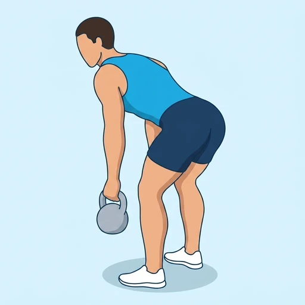

Double Kettlebell Rear Delt Row
A bent-over row with a kettlebell in each hand and the elbows driven out wide of the torso, which shifts the work off the lats and onto the posterior deltoids and upper back.
Shoulders · Kettlebell · Intermediate


Muscles worked by the Double Kettlebell Rear Delt Row
Primary
Secondary
Also called: rear deltoid, posterior delt, rear delt, back delt, posterior deltoid, rhomboid.
Equipment
Also called: kb, cast iron kettlebell, competition kettlebell, girya.
How to do the Double Kettlebell Rear Delt Row
- Stand a kettlebell just outside each foot with your feet about hip-width apart.
- Hinge at the hips with a flat back until your torso is close to parallel with the floor, letting your knees bend slightly.
- Take both handles with an overhand grip and let your arms hang straight down from your shoulders.
- Row both bells up by driving your elbows out to the sides, away from your ribs rather than back along them.
- Stop when your upper arms are roughly in line with your shoulders, and squeeze your shoulder blades together.
- Lower the bells under control until your arms hang straight again, and repeat for the desired reps.
Form tips
- The wide elbow is the whole exercise. Let it drift in against your ribs and you are doing an ordinary double kettlebell row, training your lats instead of your rear delts.
- Use less weight than you would for a normal row. The flared elbow is a long lever and the rear delts are a far smaller engine than the lats.
- Hold the hinge angle steady. Standing up as you pull hands the work to the traps and lower back and shortens the range where the rear delts actually work.
At a glance
| Body part | Shoulders |
|---|---|
| Category | Strength |
| Force type | Pull |
| Mechanic | Compound |
| Difficulty | Intermediate |
| Equipment | Kettlebell |
| Goals | Hypertrophy, Strength |
| Tags | Pull day, Shoulder focus, Knee safe, No axial load |
| MET | 6.0 (metabolic equivalent, for calorie estimates) |
| Unilateral | No |
| Bodyweight | No |
| Dataset id | double-kettlebell-rear-delt-row |
Double Kettlebell Rear Delt Row in German & Spanish
| German | Doppel-Kettlebell-Rudern für die hintere Schulter |
|---|---|
| Spanish | Remo con Dos Pesas Rusas para Deltoides Posterior |
Descriptions, instructions and tips ship in all three languages in the JSON.
Related exercises
Exercise data (JSON)
The record below is exactly what exercises.json ships for this exercise — names, descriptions, instructions and tips in English, German and Spanish.
{
"id": "double-kettlebell-rear-delt-row",
"name_en": "Double Kettlebell Rear Delt Row",
"name_de": "Doppel-Kettlebell-Rudern für die hintere Schulter",
"name_es": "Remo con Dos Pesas Rusas para Deltoides Posterior",
"description_en": "A bent-over row with a kettlebell in each hand and the elbows driven out wide of the torso, which shifts the work off the lats and onto the posterior deltoids and upper back.",
"description_de": "Ein vorgebeugtes Rudern mit je einer Kettlebell in jeder Hand und weit vom Oberkörper abgespreizten Ellbogen — das verlagert die Arbeit vom Latissimus auf den hinteren Deltamuskel und den oberen Rücken.",
"description_es": "Un remo inclinado con una pesa rusa en cada mano y los codos abiertos hacia fuera, lejos del torso, que traslada el trabajo de los dorsales a los deltoides posteriores y la parte alta de la espalda.",
"category": "strength",
"force_type": "pull",
"mechanic": "compound",
"difficulty": "intermediate",
"equipment": "kettlebell",
"body_part": "shoulders",
"primary_muscles": [
"posterior_deltoid",
"rhomboids"
],
"secondary_muscles": [
"biceps_brachii",
"erector_spinae",
"latissimus_dorsi",
"trapezius"
],
"goals": [
"hypertrophy",
"strength"
],
"tags": [
"pull_day",
"shoulder_focus",
"knee_safe",
"no_axial_load"
],
"variation_group": "rear-delt-row",
"is_unilateral": false,
"is_bodyweight": false,
"instructions_en": [
"Stand a kettlebell just outside each foot with your feet about hip-width apart.",
"Hinge at the hips with a flat back until your torso is close to parallel with the floor, letting your knees bend slightly.",
"Take both handles with an overhand grip and let your arms hang straight down from your shoulders.",
"Row both bells up by driving your elbows out to the sides, away from your ribs rather than back along them.",
"Stop when your upper arms are roughly in line with your shoulders, and squeeze your shoulder blades together.",
"Lower the bells under control until your arms hang straight again, and repeat for the desired reps."
],
"instructions_de": [
"Stell je eine Kettlebell knapp außerhalb der Füße ab, die Füße etwa hüftbreit.",
"Beuge dich mit flachem Rücken aus der Hüfte vor, bis der Oberkörper fast parallel zum Boden ist, die Knie bleiben leicht gebeugt.",
"Greif beide Griffe im Obergriff und lass die Arme gerade von den Schultern hängen.",
"Rudere beide Kettlebells nach oben, indem du die Ellbogen weit zur Seite treibst — weg von den Rippen, nicht an ihnen entlang nach hinten.",
"Stopp, wenn die Oberarme etwa auf einer Linie mit den Schultern sind, und zieh die Schulterblätter zusammen.",
"Senke die Kettlebells kontrolliert ab, bis die Arme wieder gerade hängen, und wiederhole für die gewünschte Wiederholungszahl."
],
"instructions_es": [
"Coloca una pesa rusa justo por fuera de cada pie, con los pies separados a la anchura de las caderas.",
"Inclínate desde las caderas con la espalda plana hasta que el torso quede casi paralelo al suelo, con las rodillas ligeramente flexionadas.",
"Sujeta ambas asas con agarre prono y deja los brazos colgando rectos desde los hombros.",
"Rema ambas pesas llevando los codos hacia los lados, alejándolos de las costillas en lugar de deslizarlos hacia atrás junto a ellas.",
"Detente cuando los brazos queden más o menos en línea con los hombros y aprieta los omóplatos.",
"Baja las pesas de forma controlada hasta que los brazos vuelvan a colgar rectos y repite las repeticiones deseadas."
],
"tips_en": [
"The wide elbow is the whole exercise. Let it drift in against your ribs and you are doing an ordinary double kettlebell row, training your lats instead of your rear delts.",
"Use less weight than you would for a normal row. The flared elbow is a long lever and the rear delts are a far smaller engine than the lats.",
"Hold the hinge angle steady. Standing up as you pull hands the work to the traps and lower back and shortens the range where the rear delts actually work."
],
"tips_de": [
"Der weit abgespreizte Ellbogen ist die ganze Übung. Wandert er an die Rippen, machst du ein normales Doppel-Kettlebell-Rudern und trainierst den Latissimus statt die hintere Schulter.",
"Nimm weniger Gewicht als beim normalen Rudern. Der abgespreizte Ellbogen ist ein langer Hebel, und die hintere Schulter ist ein deutlich kleinerer Motor als der Latissimus.",
"Halte den Beugewinkel der Hüfte konstant. Wer sich beim Zug aufrichtet, verlagert die Arbeit auf Trapez und unteren Rücken und verkürzt genau den Bereich, in dem die hintere Schulter arbeitet."
],
"tips_es": [
"El codo abierto es toda la clave. Si se pega a las costillas estarás haciendo un remo con dos pesas rusas normal y trabajando los dorsales en lugar de los deltoides posteriores.",
"Usa menos carga que en un remo convencional. El codo abierto es una palanca larga y el deltoides posterior es un motor mucho más pequeño que el dorsal.",
"Mantén constante el ángulo de la inclinación. Enderezarte al tirar traslada el trabajo al trapecio y a la zona lumbar y acorta justo el rango en el que trabaja el deltoides posterior."
],
"met": 6.0,
"images": {
"flat": {
"start": "images/flat/double-kettlebell-rear-delt-row-start.webp",
"peak": "images/flat/double-kettlebell-rear-delt-row-peak.webp"
}
}
}Fetch just this exercise
const { exercises } = await fetch(
"https://exercise-dataset.com/exercises.json"
).then(r => r.json());
const ex = exercises.find(e => e.id === "double-kettlebell-rear-delt-row");Free for personal and commercial in-app use with attribution (“Exercise data by RepDB”) — see the license and ready-made attribution snippets. Redistributing the data as a dataset or API is not permitted.